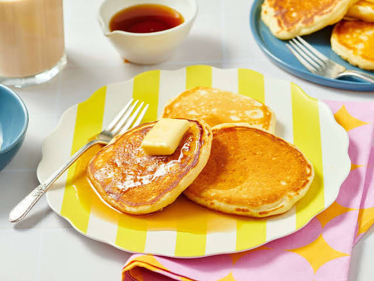

Good Old-Fashioned Pancakes

Description
Good Old-Fashioned Pancakes are simple homemade pancakes
with a soft and fluffy texture.
They use basic pantry ingredients and are cooked on a hot
pan until both sides are golden brown.
Ingredients
- All-purpose flour
- Baking powder
- White sugar
- Salt
- Milk
- Butter
- Egg
Steps
- Combine the flour, baking powder, sugar, and salt in a bowl.
- Make a small well in the center of the dry ingredients.
- Add the milk, melted butter, and egg.
- Mix until the ingredients form a batter.
- Heat a lightly greased pan over medium heat.
- Pour portions of batter onto the pan.
- Cook until bubbles appear and the edges begin to set.
- Flip and cook the other side until golden brown.
Home